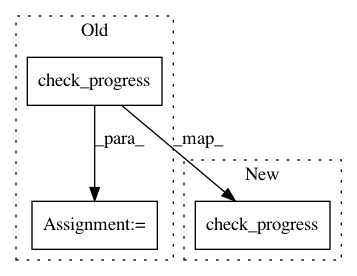

b7695ed5e6b1f065396337988acdd219cd25034d,paysage/fit.py,PersistentContrastiveDivergence,train,#PersistentContrastiveDivergence#,237
Before Change
// end of epoch processing
print("End of epoch {}: ".format(epoch))
prog = self.monitor.check_progress(self.model, 0,
store=True,
show=True)
end_time = time.time()
print("Epoch took {0:.2f} seconds".format(end_time - start_time),
end="\n\n")
After Change
// end of epoch processing
print("End of epoch {}: ".format(epoch))
self.monitor.check_progress(self.model, 0, store=True, show=True)
end_time = time.time()
print("Epoch took {0:.2f} seconds".format(end_time - start_time),
end="\n\n")
In pattern: SUPERPATTERN
Frequency: 3
Non-data size: 3
Instances
Project Name: drckf/paysage
Commit Name: b7695ed5e6b1f065396337988acdd219cd25034d
Time: 2017-04-13
Author: charleskennethfisher@gmail.com
File Name: paysage/fit.py
Class Name: PersistentContrastiveDivergence
Method Name: train
Project Name: drckf/paysage
Commit Name: b7695ed5e6b1f065396337988acdd219cd25034d
Time: 2017-04-13
Author: charleskennethfisher@gmail.com
File Name: paysage/fit.py
Class Name: StochasticGradientDescent
Method Name: train
Project Name: drckf/paysage
Commit Name: b7695ed5e6b1f065396337988acdd219cd25034d
Time: 2017-04-13
Author: charleskennethfisher@gmail.com
File Name: paysage/fit.py
Class Name: ContrastiveDivergence
Method Name: train